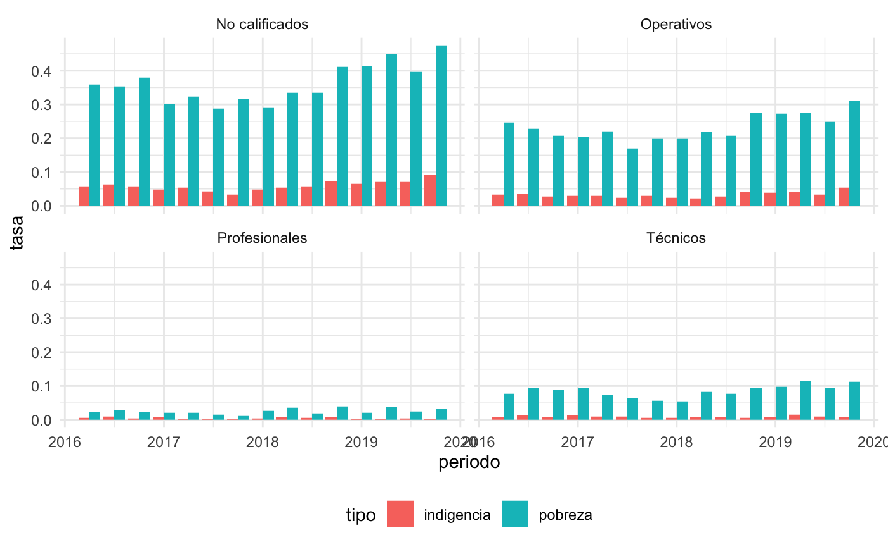
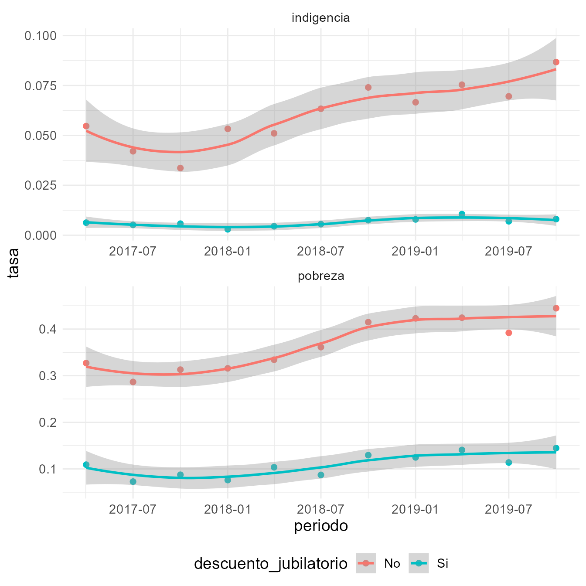
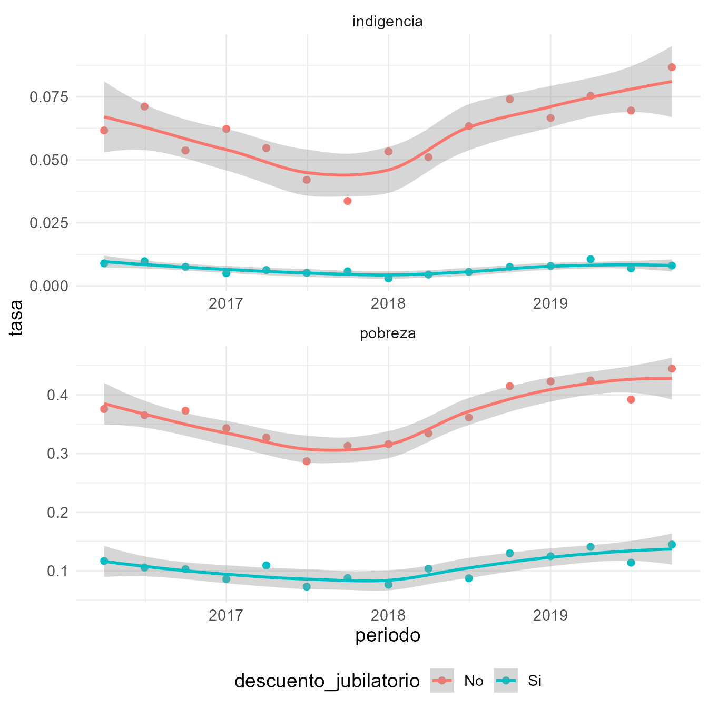

En esta vignette mostraremos como utilizar las funciones
get_poverty_lines() y calculate_poverty() para
calcular la pobreza aproximando la metodología
oficial de INDEC.
Primero cargamos el paquete eph junto con otros paquetes
que serán de utilidad
library(eph)
library(dplyr)
library(tidyr)
library(readr)
library(lubridate)
library(ggplot2)
library(forcats)Luego descargamos los datos que utilizaremos. Para ello, debemos
tener en cuenta que la metodología de pobreza de (INDEC, 2016) utiliza
canastas basicas alimentarias (CBA) y totales (CBT) regionales, que
INDEC publica dentro de los comunicados de pobreza. Para dejarlo claro,
la función get_poverty_lines() permite descargar las dos
series de CBA-CBT.
El parametro regionales de la función
get_poverty_lines() define cual de las dos canastas se
descarga.
Además, con la función get_microdata() descargamos las
bases de todos los trimestres entre 2016 y 2019. Dado que son muchas
bases y no utilizaremos todas las variables, utilizamos el parametro
vars para hacer un pre filtro de la base y no sobrecargar
la memoria. A su vez, dado que la descarga y filtrado de las bases
consume mucho tiempo, utilizamos el parámetro destfile para
guardar la descarga en un archivo, y que la próxima vez que se ejecute
la función cargue este archivo, de forma mucho más rápida (en la
computadora donde se construyó la vignette, la primera corrida tarda 100
seg y las siguientes 0.5 seg!)
canastas_regionales <- get_poverty_lines(regional = TRUE)
bases <- get_microdata(
year = 2016:2019,
period = 1:4,
type = "individual",
vars = c("ANO4", "TRIMESTRE", "REGION", "CODUSU", "NRO_HOGAR", "CH04", "CH06", "ITF", "PONDIH", "PP07H", "PP04D_COD")
# ,destfile = 'bases_eph.rds'
)Con la función unnest() agrupamos todas las bases, y con
calculate_poverty() y los datos que descargamos calculamos
la pobreza. El parámetro print_summary=TRUE le indica a la
función que deseamos imprimir un cuadro de las tasas de pobreza e
indigencia por período. Sin embargo, en la tabla
bases_pobreza contamos ahora con la variable
situación que indica si el hogar es pobre,
indigente o no_pobre. Si la variable es
NA es porque al menos un miembro del hogar no declaró el
ingreso (y por lo tanto no se sabe el Ingreso Total Familiar).
# bases <- bases %>% unnest(cols = c(microdata))
bases_pobreza <- calculate_poverty(bases, canastas_regionales, print_summary = TRUE)
bases_pobrezaDescargamos las tasas de pobreza e indigencia oficiales que guardamos en nuestro repositorio holatam/data.
pobreza_oficial <- read_csv("https://raw.githubusercontent.com/holatam/data/master/eph/canasta/pobreza_oficial.csv")
pobreza_oficial <- pobreza_oficial %>%
mutate(periodo = parse_date_time(paste0(ANO4, "-", SEMESTRE * 2), "Y.q")) %>%
select(periodo, pobreza_oficial = tasa_pobreza, indigencia_oficial = tasa_indigencia)
pobreza_oficialReutilizamos el código dentro de la función
calculate_poverty() que calcula las tasas de pobreza e
indigencia para comparar los resultados. Nótese que no es un promedio
simple, sino un promedio ponderado por la variable
PONDIH.
Pobreza_resumen <- bases_pobreza %>%
group_by(ANO4, TRIMESTRE) %>%
summarise(
Tasa_pobreza = sum(PONDIH[situacion %in% c("pobre", "indigente")], na.rm = TRUE) / sum(PONDIH, na.rm = TRUE),
Tasa_indigencia = sum(PONDIH[situacion == "indigente"], na.rm = TRUE) / sum(PONDIH, na.rm = TRUE),
.groups = "drop"
) %>%
mutate(periodo = parse_date_time(paste0(ANO4, "-", TRIMESTRE), "Y.q")) %>%
select(periodo, pobreza_estimada = Tasa_pobreza, indigencia_estimada = Tasa_indigencia)
Pobreza_resumen <- Pobreza_resumen %>%
left_join(pobreza_oficial, by = "periodo") %>%
pivot_longer(cols = pobreza_estimada:indigencia_oficial, names_to = c("tipo", "grupo"), values_to = "valor", names_sep = "_", values_drop_na = TRUE)A continuación mostramos un gráfico que compara los resultados:
Se puede ver que la pobreza oficial se ubica en todos los períodos como un punto entre los dos trimestres que la componen (es decir los segmentos a su izquierda y derecha).
Pobreza_resumen <- Pobreza_resumen %>%
group_by(tipo, grupo) %>%
mutate(
x = lag(periodo),
y = lag(valor)
)
ggplot(Pobreza_resumen, aes(periodo, valor, color = grupo)) +
geom_step(data = Pobreza_resumen %>% filter(grupo == "estimada"), linetype = "dashed") +
geom_segment(
data = Pobreza_resumen %>% filter(grupo == "estimada"),
aes(x = x, y = y, xend = periodo, yend = y), size = 1
) +
geom_point(data = Pobreza_resumen %>% filter(grupo == "oficial"), size = 3) +
facet_wrap(tipo ~ ., scales = "free") +
theme_minimal() +
theme(legend.position = "bottom")
Dado que la estimación que realizamos con las bases trimestrales es consistente con los resultados oficiales, podemos aprovechar que contamos con la identificación de la condición de los individuos, para realizar otro tipo de estimaciones.
Por ejemplo, podemos utilizar la variable PP04D_COD con
el código de ocupación, y la función organize_cno() para
extraer la calificación del puesto. Luego, podemos estudiar las tasas de
pobreza e indigencia según la calificación del trabajo. De esta forma,
vemos que tanto pobreza como indigencia son más altas entre los
trabajadores no calificados, siguiendo los operativos, los técnicos y
finalmente los trabajadores profesionales, con tasas más bajas.
pobreza_calificacion <- bases_pobreza %>%
filter(!is.na(situacion), !is.na(PP04D_COD)) %>%
organize_cno(.) %>%
filter(CALIFICACION %in% c("No calificados", "Operativos", "Técnicos", "Profesionales")) %>%
group_by(ANO4, TRIMESTRE, CALIFICACION) %>%
summarise(
pobreza = sum(PONDIH[situacion %in% c("pobre", "indigente")], na.rm = TRUE) / sum(PONDIH, na.rm = TRUE),
indigencia = sum(PONDIH[situacion == "indigente"], na.rm = TRUE) / sum(PONDIH, na.rm = TRUE),
.groups = "drop"
)
pobreza_calificacion %>%
mutate(periodo = parse_date_time(paste0(ANO4, "-", TRIMESTRE), "Y.q")) %>%
pivot_longer(cols = pobreza:indigencia, names_to = c("tipo"), values_to = "tasa") %>%
ggplot(aes(periodo, tasa, fill = tipo)) +
geom_col(position = position_dodge()) +
facet_wrap(. ~ CALIFICACION) +
theme_minimal() +
theme(legend.position = "bottom")
A su vez, podemos analizar la relación entre la pobreza y la
precariedad laboral. Utilizando la variable PP07H, que
indica si se perciben descuentos jubilatorios o no (un proxy común para
la precariedad laboral), podemos comparar la incidencia de la pobreza y
la indigencia entre trabajadores precarios y formales. Como puede verse
en el siguiente gráfico, las diferencias son significativas en ambos
indicadores.
pobreza_informalidad <- bases_pobreza %>%
filter(!is.na(situacion), PP07H %in% 1:2) %>%
group_by(ANO4, TRIMESTRE, PP07H) %>%
summarise(
pobreza = sum(PONDIH[situacion %in% c("pobre", "indigente")], na.rm = TRUE) / sum(PONDIH, na.rm = TRUE),
indigencia = sum(PONDIH[situacion == "indigente"], na.rm = TRUE) / sum(PONDIH, na.rm = TRUE),
.groups = "drop"
)
pobreza_informalidad %>%
mutate(
periodo = parse_date_time(paste0(ANO4, "-", TRIMESTRE), "Y.q"),
descuento_jubilatorio = case_when(
PP07H == 1 ~ "Si",
TRUE ~ "No"
)
) %>%
pivot_longer(cols = pobreza:indigencia, names_to = c("tipo"), values_to = "tasa") %>%
ggplot(aes(periodo, tasa, color = descuento_jubilatorio)) +
# geom_col(position = position_dodge())+
geom_point(size = 2) +
geom_smooth() +
facet_wrap(tipo ~ ., scales = "free", ncol = 1) +
theme_minimal() +
theme(
legend.position = "bottom",
text = element_text(size = 14)
)
Como se mencionó más arriba, las canastas utilizadas para calular la pobreza tienen una definición regional, pero se valorizan con precios de GBA. A continuación, se realiza una pequeña comparación de las mismas.
Primero calculamos el cociente de las canastas de las regiones respecto a la de GBA.
relativos_cba <- canastas_regionales %>%
select(-CBT, -codigo) %>%
pivot_wider(names_from = region, values_from = CBA) %>%
mutate_at(.vars = c("Cuyo", "Noreste", "Noroeste", "Pampeana", "Patagonia"), ~ .x / GBA) %>%
mutate(
GBA = GBA / GBA,
periodo = parse_date_time(periodo, "Y.q")
) # paso a formato fecha los trimestres
relativos_cbaComo se dijo, luego de valorizarse con precios de GBA, se multiplican por el PPCC. A contiuación mostramos la evolución de las canastas según
Se puede observar que si bien todas las canastas tienen por composición un mayor valor que la canasta de GBA, al multiplicarlas por el PPPC tan sólo la región Patagónica conserva una canasta con mayor valor.
ppcc <- data.frame(
region = c("Cuyo", "GBA", "Noreste", "Noroeste", "Pampeana", "Patagonia"),
ppcc = c(.872, 1, .886, .865, .904, .949)
)
relativos_cba %>%
pivot_longer(cols = Cuyo:Patagonia, names_to = "region", values_to = "relativo") %>%
left_join(ppcc, by = c("region")) %>%
mutate(relativo_normalizado = relativo / ppcc) %>%
pivot_longer(names_to = "grupo", cols = c("relativo", "relativo_normalizado", "ppcc"), values_to = "valor") %>%
mutate(grupo = fct_recode(grupo, "efecto total" = "relativo", "efecto composición" = "relativo_normalizado")) %>%
ggplot(aes(periodo, valor, color = region, group = region)) +
geom_line() +
facet_wrap(. ~ grupo) +
theme_minimal() +
theme(legend.position = "bottom")
relativos_cbt <- canastas_regionales %>%
select(-CBA, -codigo) %>%
pivot_wider(names_from = region, values_from = CBT) %>%
mutate_at(.vars = c("Cuyo", "Noreste", "Noroeste", "Pampeana", "Patagonia"), ~ .x / GBA) %>%
mutate(
GBA = GBA / GBA,
periodo = parse_date_time(periodo, "Y.q")
) # paso a formato fecha los trimestres
relativos_cbtLos resultados son similares analizando la CBT.
relativos_cbt %>%
pivot_longer(cols = Cuyo:Patagonia, names_to = "region", values_to = "relativo") %>%
left_join(ppcc, by = c("region")) %>%
mutate(relativo_normalizado = relativo / ppcc) %>%
pivot_longer(names_to = "grupo", cols = c("relativo", "relativo_normalizado", "ppcc"), values_to = "valor") %>%
mutate(grupo = fct_recode(grupo, "efecto total" = "relativo", "efecto composición" = "relativo_normalizado")) %>%
ggplot(aes(periodo, valor, color = region, group = region)) +
geom_line() +
facet_wrap(. ~ grupo) +
theme_minimal() +
theme(legend.position = "bottom")
Dado que la CBT no se calcula valorizando una canasta, sino multiplicando a la CBA por la Inversa del Coeficiente de Engel (ICE), el gráfico anterior (dado que no es idéntico al de CBA) indica que hay una diferencia en los ICE de las regiones. Efectivamente, la metodología de pobreza indica que el ICE se calcula a nivel región.
Por lo tanto, realizamos la misma comparación para el ICE, calculado a partir de las CBA y CBT.
relativos_ice <- canastas_regionales %>%
group_by(region, periodo) %>%
mutate(ice = CBT / CBA) %>%
select(-CBA, -CBT, -codigo) %>%
pivot_wider(names_from = region, values_from = ice) %>%
mutate_at(.vars = c("Cuyo", "Noreste", "Noroeste", "Pampeana", "Patagonia"), ~ .x / GBA) %>%
mutate(
GBA = GBA / GBA,
periodo = parse_date_time(periodo, "Y.q")
) # paso a formato fecha los trimestres
relativos_ice
relativos_ice %>%
pivot_longer(cols = Cuyo:Patagonia, names_to = "region", values_to = "relativo") %>%
left_join(ppcc, by = c("region")) %>%
ggplot(aes(periodo, relativo, color = region, group = region)) +
geom_line() +
theme_minimal() +
theme(legend.position = "bottom")
Si bien existe una clara diferencia de nivel, las variaciones dentro del período son marginales.
el motivo de esto es que al momento del primer calculo de pobreza en 2016 el IPC nacional se encontraba en construcción↩︎